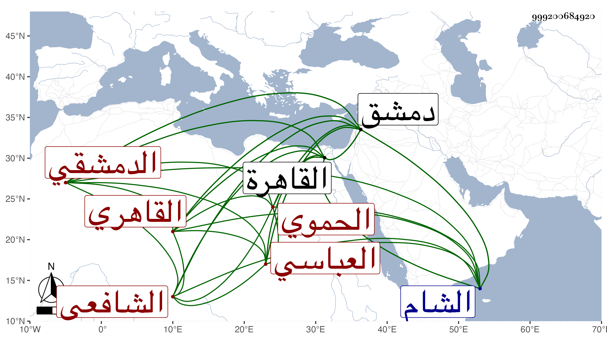

0902Sakhawi.DawLamic.ITO20230111-ara1.EIS1600.999200684920
Biography ID: 999200684920
454
عبد الرحيم بن عبد الرحمن بن أحمد بن حسن بن داود بن سالم بن معالي البدر أبو الفتح بن الموفق أبي ذر بن الشهاب العباسي الحموي الأصل القاهري الدمشقي الشافعي الماضي أبوه وجده والآتي أخوه المحيوي محمد . ولد في رمضان سنة ست وستين وثمانمائة بالقاهرة ونشأ بها فحفظ القرآن والمنهاج الفرعي وجمع الجوامع وألفية ابن مالك والتلخيص وقطعة من المطالع ، وعرض على الأمين الاقصرائي والكافياجي والزين قاسم وابن الشحنة الحنفيين والعز الحنبلي والبرهان بن ظهيرة حين كان بالقاهرة وآخرين ، وسمع علي الشاوي وعبد الصمد الهرستاني والقطب الخيضري وسافر إلى الشام فأخذ في الفقه والأصلين عن المحب البصروي ولازمه بحيث أوصى له عند موته بتصانيفه ، وكذا أخذ في الأصلين مع العربية والمنطق والعروض عن الشرف بن عيد وبرع فيما بلغني ودرس بالناصرية والظاهرية والعذراوية وكان اجلاسه في أولها حافلا ، وجمع تاريخا لقضاة دمشق لم يكمل ، وكذا شرع في شرح لألفية ابن مالك ، وتعفف عن الولايات ثم ولي كتابة سر دمشق في سنة ثلاث وتسعين وانفصل عنها في سنة خمس بالأسلمي سلامة الملقب محب الدين بعد المجئ بهذا من معتقله بقلعة دمشق وإهانة الأتابك له لدين له عليه مما لم يسهل بكثيرين سيما الملك بحيث أرسل اميرآخور فأخذه من بيته ، ثم رجع إلى بلده ثم قدم منها في الركب الشامي سنة سبع وتسعين وجاور التي تليها ولقيني فيها .
